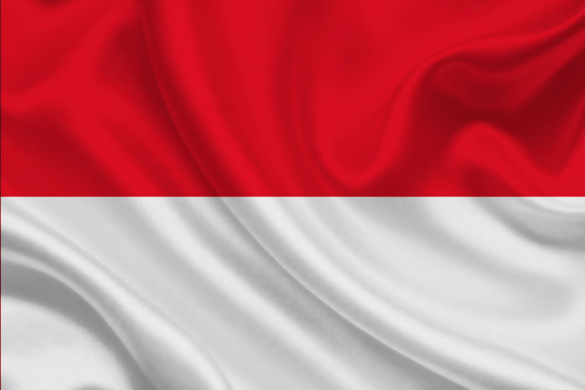
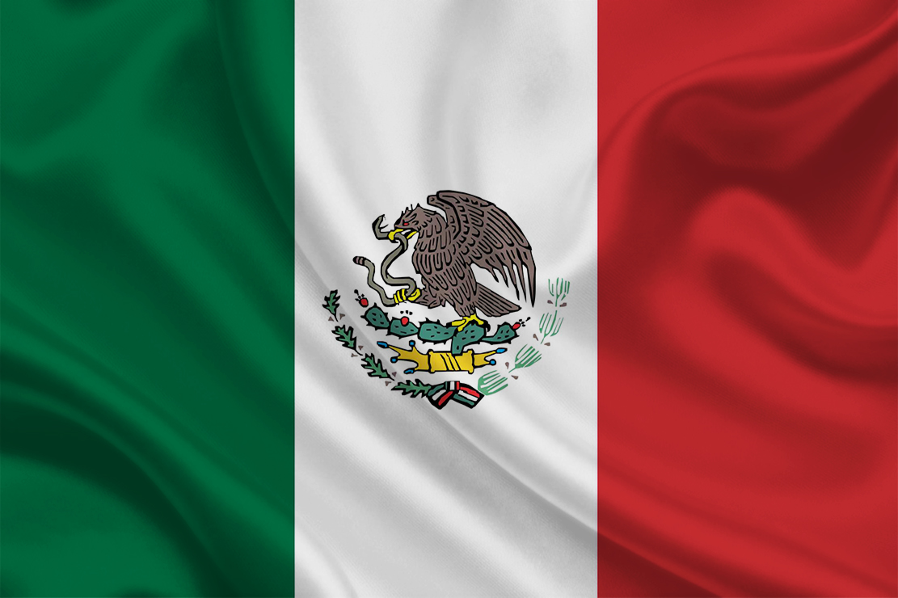
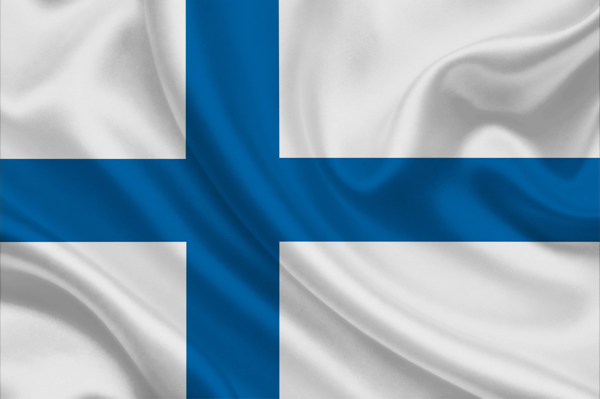

1. Scuderia Ferrari 
A Scuderia Ferrari é a equipe mais tradicional da Fórmula 1, presente desde a primeira temporada em 1950. Ao longo das décadas, construiu uma história lendária com pilotos icônicos e múltiplos títulos, especialmente dominante nos anos 2000 com Michael Schumacher.
- Pilotos Atuais: Charles Leclerc

e Lewis Hamilton
- Unidade de Potência: Ferrari

- Última Vitória: Charles Leclerc - GP do México 2024

- Último Mundial de Pilotos: Kimi Räikkönen - 2007

- Último Mundial de Construtores: Temporada 2008

A Scuderia Ferrari é a equipe mais tradicional da Fórmula 1, presente desde a primeira temporada em 1950. Ao longo das décadas, construiu uma história lendária com pilotos icônicos e múltiplos títulos, especialmente dominante nos anos 2000 com Michael Schumacher.
- Pilotos Atuais: Charles Leclerc

e Lewis Hamilton - Unidade de Potência: Ferrari
- Última Vitória: Charles Leclerc - GP do México 2024

- Último Mundial de Pilotos: Kimi Räikkönen - 2007

- Último Mundial de Construtores: Temporada 2008


 e Arvid Lindblad
e Arvid Lindblad